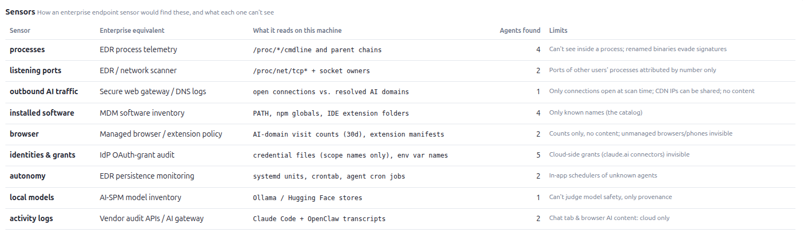
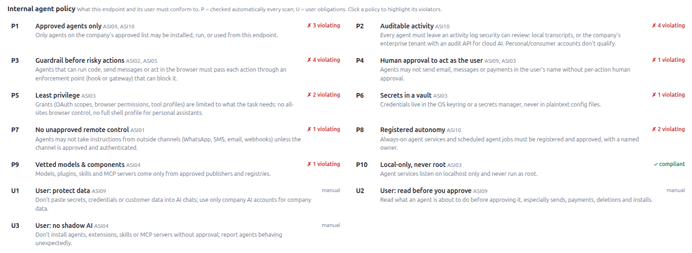
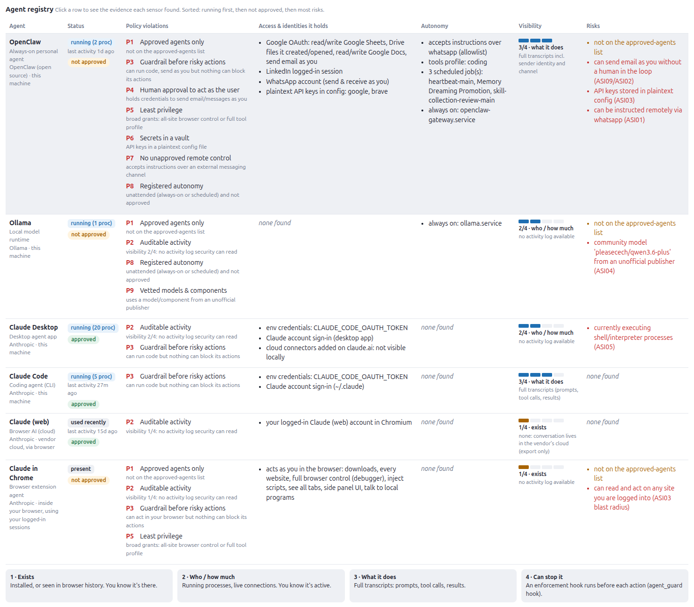

Agent Guard V2 - Functionality for AI asset inventory at an Endpoint
November 1, 2026
Agent Guard is a simple vibe coded python app written by Claude to help me learn about how one could approach Runtime AI governance.
I talk about it here: https://jeffpflueger.com/log/agent-guard-vibe-coding-a-simple-agentic-ai-governance-and-security-script.html
Monitoring what the agents are doing to mitigate risk is one important aspect.
But perhaps even more important is just an inventory of all the agents running and their security posture - AI asset inventory.
So I just had Claude add functionality to Agent Guard to imagine that my Ubuntu workstation were an endpoint in a large enterprise, and Agent Guard is to act as a suite of sensors to inventory what is running on this endpoint, provide a list of company user and endpoint policies related to agentic AI and surface for me the risks and attributes of each agentic application.
Here are the sensors:

Here are the Policies Claude suggested

And here is the inventory

Lessons learned in a coming post